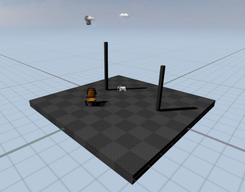
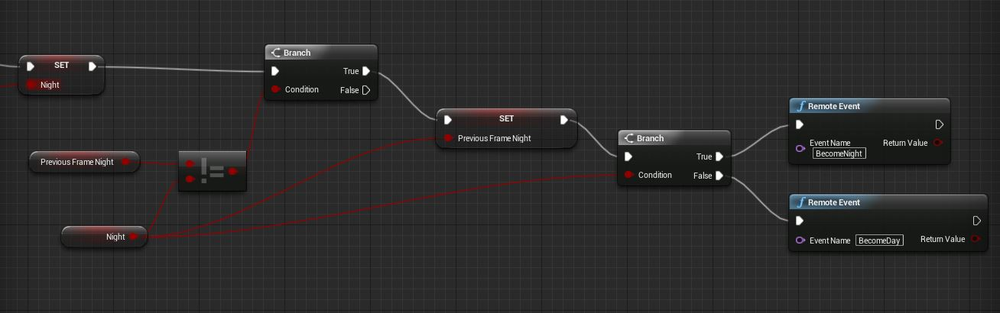
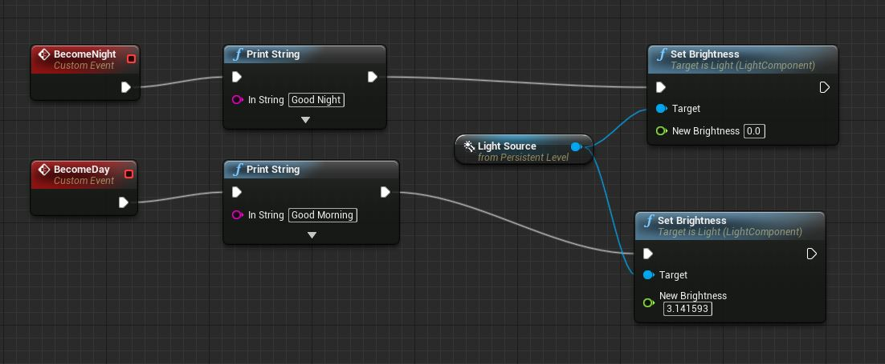

Урок: Время суток
Contents
Вступление
Здравствуйте, в данном уроке мы научимся создавать динамические времена суток(день и ночь). Это не сложный процесс, но у вас должны быть базовые знания редактора Unreal Engine 4 и небольшой опыт работы с Blueprint.
Создание уровня
Создайте новый уровень. (Вы также можете использовать готовый уровень, но убедитесь, что он имеет SkyDome и directional light ). Так же вы можете добавить несколько объектов, что бы увидеть некоторые тени от солнца.

Настройка освещения
Следующий этап данного урока, это настройка освещения. Выберите Dominant Directional Light и перейдите к панели деталей и свойств (details panel).
В блоке "Transform" измените состояние свойства " Mobility " на " Movable .". Это добавит динамические тени на сцену.

Так же, необходимо убрать галочку с " Cast Static Shadows ".
Работа с Level Blueprint
Чтобы действительно получить динамическое время суток, мы должны использовать Level Blueprint - необходимо вращать наше "солнце". Вы можете использовать Matinee или Timeline, но здесь мы будем просто вращать наше "солнце" каждый кадр.

Что делает данный код?
- Каждый "Тик", или кадр, мы вращаем наше "солнце" на определенный градус;
- "SUNSPEED" - контролирует скорость, с которой солнце вращается вокруг мира. Умножим его на DeltaTime так, чтобы частота кадров не повлияла на эту скорость. Установка этого значения в 30 дает хорошую скорость.
- "Update Sun Direction" узел меняет небо, основанный на вращении Солнца. Это функция встроена в класс SkyDome, который должен быть вызван каждый Тик(кадр). (ПРИМЕЧАНИЕ: Вы должны выбрать Skydome в 3D окне, чтобы добавить этот узел в план.) Для получения дополнительной информации об этой функции, проверить класс Skydome.
Заключительные шаги
Перед тестирования нашей работы, пересчитайте освещение мира. После чего можете запустить симуляцию и увидеть, как проходят времена суток (рассвет/день/сумерки/ночь) и как динамично меняется освещение и как просчитываются тени объектов.
Использование динамического Global Illumination
Динамическую систему суток лучше использовать вместе с Global Illumination (GI). Хотя эта функция работает пока еще не в полном объеме, но вы можете найти информацию о ней здесь .
Поиск и устранение ошибок
Ничего не происходит, когда я нажимаю играть; Время стоит на месте!
Убедитесь, что вы установили солнцу значение "Movable", и что "Cast Static Shadows" - отключена. Кроме того, убедитесь, что ваш "SUNSPEED" в Blueprint устанавливается в достаточно большое число. (Я рекомендую 30 для отладки.)
Угол освещения меняется, но видимое солнце не двигается, и небо не меняется от дня к ночи! Или: Есть звезды на небе, даже в течение дня!
Это означает, что вы не создали "Update Sun Direction" узел должным образом в вашем скрипте. Эта функция должна вызываться при каждом тике. Если вы не видите возможность добавить эту функцию, убедитесь, что у вас есть свой skydome .
Солнце движется слишком быстро!
Скорость солнца контролируется переменной "SUNSPEED" в вашем скрипте. Значение этого параметра устанавливает сколько градусов солнце будет вращаться в одну секунду. Например, при значении "SUNSPEED" в 90, это займет 4 секунды, что бы прошли сутки. Просто сократить это значение, чтобы замедлить движение солнца.
Изменение среды
В данном коде, мы определяем наше время суток: день это или ночь. Вы можете иметь способ для уровня знать, является ли это ночь или день. Если вы используете Matinee, это довольно легко сделать; просто поставить пользовательские события, чтобы вызвать желаемые результаты. Однако, если вы используете метод, который я продемонстрировал выше, это может быть сложнее.

Краткий обзор:
- Прежде всего, мы получаем вращение нашей лампы.
- Затем мы проверяем, если это ниже горизонта.
- "Ночной Порог" позволяет нам указать на сколько градусов ниже горизонта солнце должно быть, прежде чем мы перейдем на "ночь".
- Затем мы устанавливаем "Ночь", чтобы отразить наш результат. Теперь мы можем использовать эту переменную, чтобы сделать логические решения.
Используем переменную "Ночь".
Теперь нам нужно использовать переменную "Ночь". Мы создали некоторые отдаленные события, вызываемый при изменении состояния от дня к ночи:

- Прежде всего: что "Установить: Night" узел в начале такая же, как самый правый узел от последнего скриншота. (Не добавляйте его снова.)
- "LastFrameNight" - определяет текущее время суток: день или ночь. Если этого не сделать, то все события связанные со временем суток, вызовутся каждый раз.
- Затем мы проверяем, время суток и вызываем соответственный удаленный метод
Вы можете делать все, что вы хотите с удаленными событиями, например, включать различные звуки окр. среды и так далее. Вот мои настройки пользовательских событий:

Заключение
Если вы хотите использовать более сложные события дня и ночи, лучше использовать Matinee. Вы будете иметь гораздо больший контроль над всем процессом.
Русское сообщество Unreal Engine 4
Русское сообщество Unreal Engine 4
Уроки по Unreal Engine 4 на Русском
Перевел Дмитрий Кулик